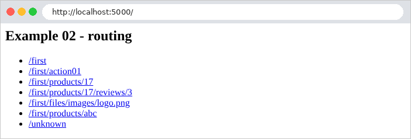
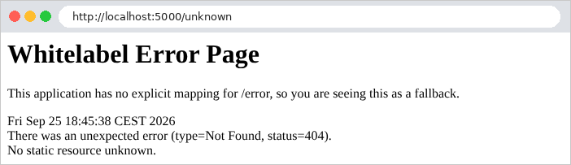

2. 控制器、动作与路由
本章考察请求从浏览器到处理它的动作所经过的路径，以及该动作返回的响应。视图要到第 4 章才会介绍：在这里，动作直接返回文本或 JSON。
2.1. 示例 01：Spring MVC 应用程序的结构
第一个示例是最小的 [Spring MVC] 应用程序。除了简介中介绍的 [pom.xml] 和 [application.properties] 文件之外，它还有两个文件：
| 01-structure/
├── src/
│ └── main/
│ ├── java/
│ │ └── example01/
│ │ ├── controllers/
│ │ │ └── HomeController.java
│ │ └── Example01Application.java
│ └── resources/
│ └── application.properties
└── pom.xml
|
2.1.1. 入口点：Example01Application.java
| package example01;
import org.springframework.boot.SpringApplication;
import org.springframework.boot.autoconfigure.SpringBootApplication;
// @SpringBootApplication：该类是应用的起点。
// Spring Boot 在其所在包 [example01]
// 及其所有子包中查找组件（控制器、服务等）。
@SpringBootApplication
public class Example01Application {
// Java 的 main 方法：程序的入口点
public static void main(String[] args) {
// 我们启动 Spring：配置、创建对象、Tomcat Web 服务器
// （http://localhost:5000，参见 application.properties）；按 Ctrl-C 停止
SpringApplication.run(Example01Application.class, args);
}
}
|
我们来逐步解读这段代码：
- 第 1 行：类所在的包。它必须与文件所在的目录一致（[src/main/java/example01]）；
- 第 3–4 行：本文件使用的其他包中的类。与 [C#] 不同，[Java] 没有隐式导入（[java.lang] 包除外，它包含 [String]、[Integer] 等）：每个文件都要显式导入它所使用的类；
- 第 9 行：[@SpringBootApplication] 是一个 注解。[Java] 注解写作 [@Name]，紧挨在它所描述的对象（类、方法、参数等）之前：它添加框架在启动时读取的信息。这相当于 [[...]] 之于 [C#] 的特性。[@SpringBootApplication] 标记应用程序的启动类，并组合了三个注解：[@Configuration] （该类可以声明由 [Spring] 管理的对象；见示例 06）、[@EnableAutoConfiguration] （自动配置：[Spring Boot] 会根据可用的库自动配置它所支持的一切，这里是 [Spring MVC]、[Tomcat] 和 [Jackson]）以及 [@ComponentScan]（组件扫描：[Spring] 在该类所在的包 [example01] 及其所有子包（如 [example01.controllers]）中查找带有 [@Controller]、[@Service] 等注解的类）；
- 第 13 行：[main] 方法，是任何 [Java] 程序的入口点。它是 [public] （可从任何地方访问）和 [static] （它属于类，而不属于类的某个对象）。参数 [args] 包含命令行参数；
- 第 16 行：[SpringApplication.run] 启动 [Spring]：读取配置（[application.properties] 文件、环境变量、命令行参数等），创建应用程序的对象，然后启动 Web 服务器 [Tomcat]，它一直等待请求，直到应用程序被停止（[Ctrl-C]）。[Example01Application.class] 指的是类本身：[Spring] 从中读取注解 [@SpringBootApplication]，并推断出要扫描的包。
没有其他需要编写的内容：无需控制器列表，无需路由声明。组件扫描会找到控制器，自动配置会设置好其余一切。
2.1.2. 控制器：controllers/HomeController.java
| package example01.controllers;
import org.springframework.stereotype.Controller;
import org.springframework.web.bind.annotation.GetMapping;
import org.springframework.web.bind.annotation.ResponseBody;
// @Controller：该类是一个 Spring MVC 控制器
@Controller
public class HomeController {
// 一个操作：处理 GET / 请求时调用的方法
@GetMapping("/")
// @ResponseBody：操作返回的值就是发送给浏览器的响应
@ResponseBody
public String index() {
return "Hello from Spring MVC!";
}
}
|
- 第 1 行：该类位于 [example01.controllers] 包中，它是 [example01] 的子包：组件扫描能找到它；
- 第 8 行：注解 [@Controller] 把该类指定为 控制器 ，供 [Spring MVC] 使用。该类不需要继承框架的类（这与 [ASP.NET Core MVC] 不同）；按惯例，其名称以 [Controller] 结尾。[Spring] 会在启动时自己创建控制器对象；
- 第 12 行：注解 [@GetMapping("/")] 把方法 [index] 与 [GET /] 类型的请求关联起来。像这样与路由关联的方法就是一个 动作；
- 第 14 行：注解 [@ResponseBody] 指定动作返回的值 就是 发送给浏览器的响应体。如果没有它，[Spring MVC] 会把返回的字符串当作要显示的 视图名称 （我们将在示例 04 中，然后在第 4 章中看到）；
- 第 15–16 行：动作返回一个字符串。按惯例，[Java] 方法名以小写字母开头。
2.1.3. 执行
在打开到 [01-structure] 文件夹的终端窗口中，输入 [../mvnw spring-boot:run] （在 [..\mvnw spring-boot:run] 下为 [Windows]）。编译之后，[Spring Boot] 会显示它的横幅，接着是启动消息（我们把日期、时间、进程号和线程名替换为 [...]，并缩写了路径）：
| . ____ _ __ _ _
/\\ / ___'_ __ _ _(_)_ __ __ _ \ \ \ \
( ( )\___ | '_ | '_| | '_ \/ _` | \ \ \ \
\\/ ___)| |_)| | | | | || (_| | ) ) ) )
' |____| .__|_| |_|_| |_\__, | / / / /
=========|_|==============|___/=/_/_/_/
:: Spring Boot :: (v4.1.1)
... INFO ... example01.Example01Application : Starting Example01Application using Java 21.0.10 with PID 4545 (.../examples/01-structure/target/classes ...)
... INFO ... example01.Example01Application : No active profile set, falling back to 1 default profile: "default"
... INFO ... o.s.boot.tomcat.TomcatWebServer : Tomcat initialized with port 5000 (http)
... INFO ... o.apache.catalina.core.StandardEngine : Starting Servlet engine: [Apache Tomcat/11.0.24]
... INFO ... o.s.boot.tomcat.TomcatWebServer : Tomcat started on port 5000 (http) with context path '/'
... INFO ... example01.Example01Application : Started Example01Application in 1.509 seconds (process running for 1.864)
|
启动消息中指出了 [Java] 的版本、监听端口（5000，由 [application.properties] 设定）以及嵌入应用程序的 [Tomcat] 服务器的版本。它们还指出了当前激活的 配置文件（profile）：[default]。配置文件是一组设置（开发、生产等）；案例研究将会用到一个。我们用浏览器请求 URL [http://localhost:5000/] ：

然后用 [curl] 请求。选项 [-i] 还会显示响应的 HTTP 头（这里我们只列出其中几个）：
| curl -i http://localhost:5000/
|
| HTTP/1.1 200
Content-Type: text/plain;charset=UTF-8
Content-Length: 22
Hello from Spring MVC!
|
响应的第一行是状态码 200，没有通常的文本 [OK]：[Tomcat] 没有发送它，因为 HTTP 协议并不要求。浏览器和 [curl] 只接受状态码。
[curl] 收到的字符串带有头 [Content-Type: text/plain]：即纯文本。然而，浏览器却把它显示为 HTML（从字体可以看出，它与 HTML 页面所用的字体相同）。这是因为，对于动作在没有其他指定时返回的字符串，[Spring MVC] 会根据请求中的 [Accept] 头来选择响应类型，客户端通过该头指明它所接受的类型：这就是 内容协商。[curl] 发送 [Accept: */*] （所有类型）并收到 [text/plain]；浏览器发送 [Accept: text/html,...] 并收到 [text/html]。我们用 [-H] 选项通过 [curl] 发送一个浏览器头来验证这一点：
| curl -i -H "Accept: text/html" http://localhost:5000/
|
| HTTP/1.1 200
Content-Type: text/html;charset=UTF-8
Content-Length: 22
Hello from Spring MVC!
|
这与 [ASP.NET Core MVC] 不同，后者总是把字符串作为纯文本发送。示例 02 将展示如何指定响应类型。
在第一次请求时，控制台会再显示三行：
| ... INFO ... o.a.c.c.C.[Tomcat].[localhost].[/] : Initializing Spring DispatcherServlet 'dispatcherServlet'
... INFO ... o.s.web.servlet.DispatcherServlet : Initializing Servlet 'dispatcherServlet'
... INFO ... o.s.web.servlet.DispatcherServlet : Completed initialization in 1 ms
|
[DispatcherServlet] 是 [Spring MVC] 的入口点（见简介中的图）：[Tomcat] 把所有请求都转发给它，由它来为每个请求选择对应的动作。[Tomcat] 只在收到第一个请求时才准备它。
2.2. 示例 02：路由
路由把一个 URL 和一个 HTTP 方法（GET、POST 等）与一个动作关联起来。示例 02 有两个控制器：
| 02-routing/src/main/java/example02/
├── controllers/
│ ├── HomeController.java
│ └── FirstController.java
└── Example02Application.java
|
类 [Example02Application] 除了名称之外，与示例 01 中的类完全相同：所有示例都是如此。文件 [controllers/HomeController.java]：
| package example02.controllers;
import org.springframework.http.MediaType;
import org.springframework.web.bind.annotation.GetMapping;
import org.springframework.web.bind.annotation.RestController;
// @RestController = @Controller + 在每个操作上加 @ResponseBody
@RestController
public class HomeController {
// GET /：一个包含指向其他操作的链接的 HTML 页面。
// produces：响应的类型（Content-Type 头），此处为 HTML
@GetMapping(value = "/", produces = MediaType.TEXT_HTML_VALUE)
public String index() {
return """
<h2>Example 02 - routing</h2>
<ul>
<li><a href="/first">/first</a></li>
<li><a href="/first/action01">/first/action01</a></li>
<li><a href="/first/products/17">/first/products/17</a></li>
<li><a href="/first/products/17/reviews/3">/first/products/17/reviews/3</a></li>
<li><a href="/first/files/images/logo.png">/first/files/images/logo.png</a></li>
<li><a href="/first/products/abc">/first/products/abc</a></li>
<li><a href="/unknown">/unknown</a></li>
</ul>
""";
}
}
|
- 第 8 行：[@RestController] 组合了 [@Controller] 和 [@ResponseBody]：类中所有动作都直接返回响应体。这是不生成视图的控制器最常见的形式；我们在第 4 章之前都会使用它；
- 第 13 行：注解可以有多个属性，写作 [name = value]。[value] 是路由路径（当它单独出现时，可以省略 [value =]，如示例 01 所示）；[produces] 指定响应类型（头 [Content-Type]），这里是 [text/html]，与请求头 [Accept] 无关。[MediaType.TEXT_HTML_VALUE] 是一个等于 ["text/html"] 的常量：名称中的拼写错误会导致编译错误，而手写字符串则不会；
- 第 15–26 行：一个 文本块 （[text block]，[Java] 15），由三个引号界定。它可以跨越多行，并且可以包含引号而无需转义。所有行共有的缩进（包括结束符 ["""] 的缩进）会被去除。
因此，[index] 动作返回一个 HTML 页面，其中包含指向另一个控制器各动作的链接：

[controllers/FirstController.java] 文件：
| package example02.controllers;
import org.springframework.web.bind.annotation.GetMapping;
import org.springframework.web.bind.annotation.PathVariable;
import org.springframework.web.bind.annotation.PostMapping;
import org.springframework.web.bind.annotation.RequestMapping;
import org.springframework.web.bind.annotation.RestController;
// 控制器所有路由共享的前缀
@RestController
@RequestMapping("/first")
public class FirstController {
// GET /first
@GetMapping("")
public String index() {
return "Action [index] of the [First] controller";
}
// GET /first/action01
@GetMapping("/action01")
public String action01() {
return "Action [action01] of the [First] controller, GET request";
}
// POST /first/action01：同一路径，另一种 HTTP 方法
@PostMapping("/action01")
public String action01Post() {
return "Action [action01Post] of the [First] controller, POST request";
}
// GET /first/products/17：{id} 是路径变量；\d+：只能是数字
@GetMapping("/products/{id:\\d+}")
public String product(@PathVariable int id) {
return "Product no. " + id;
}
// GET /first/products/17/reviews/3：两个路径变量
@GetMapping("/products/{id:\\d+}/reviews/{number:\\d+}")
public String review(@PathVariable int id, @PathVariable int number) {
return "Review no. %d of product no. %d".formatted(number, id);
}
// GET /first/files/...：{*path} 可匹配任意路径结尾
@GetMapping("/files/{*path}")
public String file(@PathVariable String path) {
return "Requested file: " + path;
}
}
|
我们来说明这段代码：
- 第 10–11 行：应用于类的注解 ***
[@RequestMapping("/first")]***，设定该控制器中所有路由共有的前缀：它的动作处理以 ***[/first]*** 开头的 URL 路由；
- 第 15–16 行：[@GetMapping("")]：动作 [index] 处理 [GET /first]。动作的 URL 是控制器前缀与动作路径的拼接；
- 第 21–22 行：动作 [action01] 处理 [GET /first/action01]；
- 第 27–28 行：相同的路径，但方法为 POST：[@PostMapping] 取代 [@GetMapping]。此外还有 [@PutMapping]、[@DeleteMapping]、[@PatchMapping] 等（而应用于方法的 [@RequestMapping] 接受所有 HTTP 方法）。[Java] 方法的名称（[action01Post]）是任意的：路由只取决于注解。此外，在同一个类中，两个方法不能有相同的名称和相同的参数；
- 第 33–34 行：[{id}] 是一个 路径变量：URL 的这一段可以取多个值。[\d+] 是一个 正则表达式：该段必须由一个或多个数字组成；否则，路由不匹配。在 [Java] 字符串中，字符 [\] 要写成 [\\]：因此是 [{id:\\d+}]。注解 [@PathVariable] 指示 [Spring MVC] 把该段的值转换为 [int] 之后，传递给动作中同名的参数 [id]：对于 [/first/products/17]，[id] 等于数字 17。这就是 数据绑定 （[data binding]），下一章将详细讨论。为了让 [Spring] 知道参数的名称，编译器必须在编译后的类中保留它们（选项 [-parameters]）：[spring-boot-starter-parent] 已处理好这一点；
- 第 35 行：运算符 [+] 把字符串和数字拼接起来；
- 第 39–41 行：两个路径变量作为两个参数传递给动作。方法 [formatted] 按参数的顺序，把文本中的每个 [%d] 替换为一个整数；
- 第 45–47 行：[{*path}] 是一个“通配”变量（[catch-all]）：它接受 URL 的任何结尾部分，包括 [/]。它的值以 [/] 开头。
下面是几个请求的结果：
| curl -i http://localhost:5000/first
|
| HTTP/1.1 200
Content-Type: text/plain;charset=UTF-8
Content-Length: 40
Action [index] of the [First] controller
|
| curl -i http://localhost:5000/first/action01
|
| HTTP/1.1 200
Content-Type: text/plain;charset=UTF-8
Content-Length: 56
Action [action01] of the [First] controller, GET request
|
| curl -i http://localhost:5000/first/products/17
|
| HTTP/1.1 200
Content-Type: text/plain;charset=UTF-8
Content-Length: 14
Product no. 17
|
| curl -i http://localhost:5000/first/products/17/reviews/3
|
| HTTP/1.1 200
Content-Type: text/plain;charset=UTF-8
Content-Length: 30
Review no. 3 of product no. 17
|
| curl -i http://localhost:5000/first/files/images/logo.png
|
| HTTP/1.1 200
Content-Type: text/plain;charset=UTF-8
Content-Length: 32
Requested file: /images/logo.png
|
要发送 POST 请求，请使用 [-X POST] 选项 [curl]：
| curl -i -X POST http://localhost:5000/first/action01
|
| HTTP/1.1 200
Content-Type: text/plain;charset=UTF-8
Content-Length: 61
Action [action01Post] of the [First] controller, POST request
|
如果某个 HTTP 方法没有被该路径上的任何动作处理，就会产生 405 错误（[Method Not Allowed]）。[Allow] 头列出了接受的方法：
| curl -i -X PUT http://localhost:5000/first/action01
|
| HTTP/1.1 405
Allow: POST, GET
Content-Type: application/json
{"timestamp":"2026-09-25T16:45:30.867Z","status":405,"error":"Method Not Allowed","message":"Method 'PUT' is not supported.","path":"/first/action01"}
|
最后，没有被任何路由处理的 URL 会产生 404 错误。对于不符合正则表达式 [\d+] 的标识符也是如此：没有路由匹配 [/first/products/abc]。
| curl -i http://localhost:5000/first/products/abc
|
| HTTP/1.1 404
Content-Type: application/json
{"timestamp":"2026-09-25T16:45:30.828Z","status":404,"error":"Not Found","message":"No static resource first/products/abc.","path":"/first/products/abc"}
|
| curl -i http://localhost:5000/unknown
|
| HTTP/1.1 404
Content-Type: application/json
{"timestamp":"2026-09-25T16:45:30.841Z","status":404,"error":"Not Found","message":"No static resource unknown.","path":"/unknown"}
|
与 [ASP.NET Core] 不同，[Spring Boot] 的错误响应包含以下信息：错误发生的日期、状态码、其描述、一条消息以及请求的路径。消息 [No static resource] 可以这样解释：当没有动作匹配 URL 时，[Spring MVC] 会查找具有该名称的 静态文件 （存放在应用程序 [src/main/resources/static] 文件夹中的图片、样式表等）；由于 找不到，它就报告 404 错误。[Spring Boot] 随后生成错误响应，内容协商再次发挥作用：[curl] 收到的是 JSON，浏览器收到的是一个 HTML 页面，即“Whitelabel Error Page”（一个“无品牌”的错误页面）：

第 7 章将展示如何用应用程序专用的错误页面替换这个页面。
2.3. 示例 03：动作的响应
动作返回的内容决定了 HTTP 响应。示例 03 回顾了主要的几种情况。文件 [controllers/ResponsesController.java]：
| package example03.controllers;
import java.time.Duration;
import java.time.Instant;
import java.util.List;
import java.util.Map;
import java.util.concurrent.CompletableFuture;
import java.util.concurrent.TimeUnit;
import org.springframework.http.HttpStatus;
import org.springframework.http.MediaType;
import org.springframework.http.ResponseEntity;
import org.springframework.web.bind.annotation.GetMapping;
import org.springframework.web.bind.annotation.RequestMapping;
import org.springframework.web.bind.annotation.RestController;
@RestController
@RequestMapping("/responses")
public class ResponsesController {
// 一个字符串，声明为纯文本：浏览器原样显示
@GetMapping(value = "/text", produces = MediaType.TEXT_PLAIN_VALUE)
public String text() {
return "<h1>Action [text]</h1>";
}
// 同一个字符串，声明为 HTML：浏览器会解释它
@GetMapping(value = "/html", produces = MediaType.TEXT_HTML_VALUE)
public String html() {
return "<h1>Action [html]</h1>";
}
// 一个 record：数据类（参见示例 06），此处声明在控制器内部
public record Person(String lastName, String firstName, int age) {
}
// 一个对象：序列化为 JSON，类型为 [application/json]
@GetMapping("/json")
public Person json() {
return new Person("Martin", "Jean", 42);
}
// 一个列表：序列化为 JSON 数组
@GetMapping("/list")
public List<String> list() {
return List.of("Mme", "Melle", "Mr");
}
// ResponseEntity：由操作选择完整的响应（状态码、头、内容）
// status(201)：使用 201 状态码（已创建）而不是 200（正常）
@GetMapping("/created")
public ResponseEntity<Map<String, String>> created() {
return ResponseEntity.status(HttpStatus.CREATED).body(Map.of("message", "resource created"));
}
// 无响应内容：204 状态码（无内容）表示“没有可显示的内容”
@GetMapping("/empty")
public ResponseEntity<Void> empty() {
return ResponseEntity.noContent().build();
}
// 异步操作：Spring MVC 等待处理结束（CompletableFuture）
@GetMapping("/task")
public CompletableFuture<Map<String, String>> task() {
Instant start = Instant.now();
// 等待 500 毫秒，且不阻塞接收请求的线程
return CompletableFuture.supplyAsync(
() -> Map.of("wait", Duration.between(start, Instant.now()).toMillis() + " ms"),
CompletableFuture.delayedExecutor(500, TimeUnit.MILLISECONDS));
}
// “预期内”的错误：status(404) 产生 404 响应
@GetMapping("/not-found")
public ResponseEntity<Map<String, String>> notFound() {
return ResponseEntity.status(HttpStatus.NOT_FOUND).body(Map.of("message", "This resource does not exist"));
}
// “预期外”的错误：未处理的异常产生 500 响应
@GetMapping("/exception")
public String exception() {
throw new IllegalStateException("An unexpected error");
}
}
|
我们来剖析这段代码：
- 第 22–25 行：一个字符串，通过 [produces] 属性被标记为纯文本（见示例 02）：浏览器原样显示它，连同其中的标签；
- 第 28–31 行：同一个字符串，被声明为 HTML：浏览器会解释它；
- 第 34–35 行：一个 record （[Java] 16）：一种数据类，在一行中声明。编译器为每个组件（[lastName]、[firstName]、[age]）创建一个私有的只读字段，一个初始化它们的构造函数，为每个组件创建一个访问方法（[lastName()]、[firstName()]、[age()]），以及工具方法（[equals]、[hashCode]、[toString]）。这个 record 在这里声明于控制器之内：它是一个 嵌套类，其完整名称为 [ResponsesController.Person]；
- 第 38–41 行：一个对象被 序列化 为 JSON，并带有头 [Content-Type: application/json]。执行转换的是 [Jackson] 库，它由 [spring-boot-starter-webmvc] starter 提供：JSON 属性的名称对应于 record 的各个组件；
- 第 44–47 行：列表被序列化为 JSON 数组。[List.of(...)] 创建一个只读列表。[List<String>] 是一种 泛型类型：其元素均为字符串的列表；
- 第 51–54 行：当动作需要选择状态码时，它返回一个 [ResponseEntity<T>]：一个描述完整响应（状态码、头、类型为 [T] 的响应体）的对象。它通过 [ResponseEntity] 类的静态方法链式调用来创建：[status(HttpStatus.CREATED)] 把状态码设为 201（[Created]），[body(...)] 设置 内容，该内容将被序列化为 JSON。[Map.of("message", "resource created")] 创建一个不可修改的 字典 （一个 [Map]），只有一个键，[Jackson] 把它序列化为 JSON 对象；
- 第 57–60 行：[noContent()] 返回 204 响应（[No Content]）：“无内容”。[build()] 返回一个没有响应体的响应，其类型为 [ResponseEntity<Void>]；
- 第 63–70 行：一个 异步动作。它返回一个 [CompletableFuture<T>]，即一个“待定”的结果（相当于 [Task<T>] 任务之于 [C#] ，或 [JavaScript] 的 Promise）；[Spring MVC] 会立即释放正在处理该请求的 [Tomcat] 线程，直到结果可用时才发送响应。[supplyAsync(function, executor)] 使用该函数计算结果，该函数在这里延迟 500 毫秒后执行。这个函数被写成一个 lambda：[() -> expression] 是一个没有参数、返回表达式值的函数。[Duration.between] 测量两个时间点之间经过的时间；
- 第 73–76 行：程序预料到的错误：一个状态码为 404、包含 JSON 的 [ResponseEntity] 。[ResponseEntity] 类还有一些快捷方法：[ok(...)] （200）、[badRequest()] （400）、[notFound()] （404）等；
- 第 79–82 行：一个 意外错误：动作抛出了一个它没有处理的异常。[Spring Boot] 随后以 500 错误（[Internal Server Error]）作出响应。
收到的响应：
| curl -i http://localhost:5000/responses/text
|
| HTTP/1.1 200
Content-Type: text/plain;charset=UTF-8
Content-Length: 22
<h1>Action [text]</h1>
|
| curl -i http://localhost:5000/responses/html
|
| HTTP/1.1 200
Content-Type: text/html;charset=UTF-8
Content-Length: 22
<h1>Action [html]</h1>
|
| curl -i http://localhost:5000/responses/json
|
| HTTP/1.1 200
Content-Type: application/json
Content-Length: 49
{"lastName":"Martin","firstName":"Jean","age":42}
|
| curl -i http://localhost:5000/responses/list
|
| HTTP/1.1 200
Content-Type: application/json
Content-Length: 20
["Mme","Melle","Mr"]
|
| curl -i http://localhost:5000/responses/created
|
| HTTP/1.1 201
Content-Type: application/json
{"message":"resource created"}
|
| curl -i http://localhost:5000/responses/empty
|
| curl -i http://localhost:5000/responses/task
|
| HTTP/1.1 200
Content-Type: application/json
Content-Length: 17
{"wait":"506 ms"}
|
| curl -i http://localhost:5000/responses/not-found
|
| HTTP/1.1 404
Content-Type: application/json
{"message":"This resource does not exist"}
|
| curl -i http://localhost:5000/responses/exception
|
| HTTP/1.1 500
Content-Type: application/json
{"timestamp":"2026-09-25T16:45:56.039Z","status":500,"error":"Internal Server Error","message":"An unexpected error","path":"/responses/exception"}
|
对于该异常，[Spring Boot] 的错误响应（见示例 02）包含异常消息，但不包含调用栈，这是由 [application.properties] 文件禁止的（见简介）。消息本身之所以出现在那里，只是因为开发工具（[Spring Boot DevTools]）处于激活状态：在生产环境中没有这些工具，响应将是：
| HTTP/1.1 500
Content-Type: application/json
{"timestamp":"2026-09-25T16:46:17.984Z","status":500,"error":"Internal Server Error","path":"/responses/exception"}
|
异常消息确实可能向攻击者提供信息。错误的详细信息会写入服务器控制台（这里只重现开头部分）：
| ... ERROR ... o.a.c.c.C.[.[.[/].[dispatcherServlet] : Servlet.service() for servlet [dispatcherServlet] in context with path [] threw exception [Request processing failed: java.lang.IllegalStateException: An unexpected error] with root cause
java.lang.IllegalStateException: An unexpected error
at example03.controllers.ResponsesController.exception(ResponsesController.java:81) ~[classes/:na]
...
|
在浏览器中，可以看出 [text/plain] 与 [text/html] 之间的差别：

2.4. 示例 04：重定向
动作可以用重定向来响应：状态码为 301 或 302，并带有一个 [Location] 头，告诉浏览器接下来请求哪个 URL。浏览器会立即请求它，无需用户介入。重定向在 Web 应用程序中无处不在：表单成功提交之后、登录之后、切换语言之后……
[controllers/RedirectsController.java] 文件：
| package example04.controllers;
import java.net.URI;
import org.springframework.http.HttpStatus;
import org.springframework.http.ResponseEntity;
import org.springframework.stereotype.Controller;
import org.springframework.web.bind.annotation.GetMapping;
import org.springframework.web.bind.annotation.PathVariable;
import org.springframework.web.bind.annotation.ResponseBody;
import org.springframework.web.servlet.mvc.support.RedirectAttributes;
// @Controller（而不是 @RestController）：操作返回的字符串
// 在此是视图的名称，而 "redirect:..." 是特殊的视图名称
@Controller
public class RedirectsController {
// 永久重定向（301）：页面的地址已永久改变
@GetMapping("/old")
public ResponseEntity<Void> oldPage() {
return ResponseEntity.status(HttpStatus.MOVED_PERMANENTLY).location(URI.create("/new")).build();
}
@GetMapping("/new")
@ResponseBody
public String newPage() {
return "You are on the [new] page";
}
// 临时重定向（302），到一个计算得出的地址
@GetMapping("/go/{destination}")
public String go(@PathVariable String destination) {
return "redirect:/page/" + destination;
}
// 重定向到一个模板地址：Spring 用 [name] 属性的值
// 替换 {name}，并为 URL 正确地进行编码
@GetMapping("/to-template/{destination}")
public String toTemplate(@PathVariable String destination, RedirectAttributes attributes) {
attributes.addAttribute("name", destination);
return "redirect:/page/{name}";
}
@GetMapping("/page/{name}")
@ResponseBody
public String page(@PathVariable String name) {
return "You are on the [" + name + "] page";
}
// 重定向到另一个站点
@GetMapping("/documentation")
public String documentation() {
return "redirect:https://docs.spring.io/spring-framework/reference/web/webmvc.html";
}
}
|
我们来说明这段代码：
- 第 15 行：该类被标注为 [@Controller]，而不是 [@RestController]。因此，动作返回的字符串——除非带有 [@ResponseBody]——就是 视图名称；而以 [redirect:] 开头的视图名称是一个会触发重定向的特殊名称；
- 第 19–22 行：永久重定向（状态码 301，[Moved Permanently]）：页面已永久移动到新地址。浏览器和搜索引擎可以保存这个新地址。它通过 [ResponseEntity] 创建（见示例 03）：[location(...)] 设置头 [Location]，其值是一个 [URI] 对象（一个地址）；
- 第 24–28 行：这里必须使用注解 [@ResponseBody]：返回的字符串是响应体，而不是视图名称；
- 第 31–34 行：["redirect:" + url] 生成临时重定向（状态码 302，[Found]），这里重定向到一个计算出来的地址；
- 第 38–42 行：重定向到一个 模板地址：在 [redirect:/page/{name}] 中，[Spring MVC] 会把 [{name}] 替换为 [name] 属性的值，该值存放在 [RedirectAttributes] 对象中。这个对象由 [Spring MVC] 提供给把它声明为参数的动作。与前一种形式相比的优点是：该值会被正确地为 URL 编码（见下文）。[RedirectAttributes] 对象还将在第 4 章中用来向下一个页面传递消息；
- 第 51–54 行：可以重定向到另一个网站。
[curl] 演示了重定向，但并不实际跟随它：
| curl -i http://localhost:5000/old
|
| HTTP/1.1 301
Location: /new
Content-Length: 0
|
使用选项 [-L]，[curl] 会像浏览器一样跟随重定向。这样我们就看到了两个先后的响应：
| curl -i -L http://localhost:5000/old
|
| HTTP/1.1 301
Location: /new
Content-Length: 0
HTTP/1.1 200
Content-Type: text/plain;charset=UTF-8
Content-Length: 25
You are on the [new] page
|
| curl -i http://localhost:5000/go/contact
|
| HTTP/1.1 302
Location: http://localhost:5000/page/contact
Content-Length: 0
|
| curl -i http://localhost:5000/to-template/contact
|
| HTTP/1.1 302
Location: http://localhost:5000/page/contact
Content-Length: 0
|
两个动作产生相同的重定向。请注意，这一次 [Location] 头中的地址是绝对地址（[http://localhost:5000/...]），而动作返回的是相对地址（[/page/contact]）：到 [redirect:] 的重定向会经过 [Tomcat] 服务器，由它补全地址，因为 [Spring Boot] 默认这样设置（属性 [server.tomcat.use-relative-redirects]，其值为 [false]）。而动作 [oldPage] 的重定向由 [ResponseEntity] 生成，则原样保留地址。两种形式都是正确的。
当目标中包含必须在 URL 中编码的字符（例如空格，编码为 [%20]）时，这两个动作之间的差别就显现出来了：
| curl -i http://localhost:5000/go/my%20contact
|
| HTTP/1.1 302
Location: http://localhost:5000/page/my contact
Content-Length: 0
|
| curl -i http://localhost:5000/to-template/my%20contact
|
| HTTP/1.1 302
Location: http://localhost:5000/page/my%20contact
Content-Length: 0
|
路径变量 [destination] 被赋予的是解码后的值 [my contact]。动作 [go] 的字符串拼接会把它原样复制：头 [Location] 中包含一个原始的空格，这使它成为一个无效的地址（URL 中不包含空格）。有些客户端会自行纠正这一点（例如 [curl -L] 仍然会跟随重定向并到达 [my contact] 页面），而另一些则不会：这是一个陷阱，因为测试时这个错误不会被察觉。而 [toTemplate] 动作的模板 URL 则被正确编码：这才是把变量值插入重定向的正确方式。在浏览器中，只能看到最终的页面；地址栏显示新的 URL：
| curl -i http://localhost:5000/documentation
|
| HTTP/1.1 302
Location: https://docs.spring.io/spring-framework/reference/web/webmvc.html
Content-Length: 0
|
2.5. 示例 05：Request 和 Response 对象
[Spring MVC] 基于 [Servlet] API 和 [Jakarta EE] （旧称 [Java EE]），即 [Java] Web 服务器标准：[Tomcat] 是一个 Servlet 容器，而 [DispatcherServlet] 是一个 Servlet，也就是服务器把请求委托给它的对象。在这个标准中，每个请求由一个 [HttpServletRequest] 对象表示，正在生成的响应则由一个 [HttpServletResponse] 对象表示。动作可以接收其中任何一个：只需把它们声明为参数即可。这有时是必要的，我们会在案例研究中这样做（例如读取或设置 Cookie），但你需要清楚自己在做什么。
文件 [controllers/HttpController.java]：
| package example05.controllers;
import java.io.IOException;
import java.util.LinkedHashMap;
import java.util.Map;
import org.springframework.http.ResponseEntity;
import org.springframework.web.bind.annotation.GetMapping;
import org.springframework.web.bind.annotation.RequestMapping;
import org.springframework.web.bind.annotation.RestController;
import jakarta.servlet.http.HttpServletRequest;
import jakarta.servlet.http.HttpServletResponse;
@RestController
@RequestMapping("/http")
public class HttpController {
// 请求：方法、路径、参数、头等。
// Spring 会把 HttpServletRequest 对象提供给需要它的操作
@GetMapping("/request")
public Map<String, String> request(HttpServletRequest request) {
// LinkedHashMap：保持键的插入顺序的字典
Map<String, String> info = new LinkedHashMap<>();
info.put("method", request.getMethod());
info.put("path", request.getRequestURI());
info.put("parameters", request.getQueryString());
info.put("browser", request.getHeader("User-Agent"));
info.put("ip", request.getRemoteAddr());
return info;
}
// 响应：我们向其中添加一个头，然后操作正常返回其值
@GetMapping("/header")
public String header(HttpServletResponse response) {
response.setHeader("X-Example", "05-request-response");
return "Response with an added header";
}
// “手工”编写的响应：状态码、类型，然后是正文
@GetMapping("/response")
public void response(HttpServletResponse response) throws IOException {
response.setStatus(200);
response.setContentType("text/plain;charset=UTF-8");
response.getWriter().write("Response written by [response.getWriter()]");
}
// 不要犯的错误：先写入响应，然后再返回结果
@GetMapping("/double")
public ResponseEntity<Void> doubleResponse(HttpServletResponse response) throws IOException {
response.getWriter().write("Start of the response... ");
// flushBuffer：最初的字节发往浏览器
response.flushBuffer();
// 响应已经发出：其状态码和头不能再更改
return ResponseEntity.notFound().build();
}
}
|
我们来说明这段代码：
- 第 12–13 行：Servlet API 的类 [Servlet] 位于 [jakarta.servlet...] 包中；
- 第 22 行：动作声明了一个类型为 [HttpServletRequest] 的参数：[Spring MVC] 会把当前请求传给它。[Spring MVC] 就是这样为动作提供所需之物的：依据其参数的类型，或依据其注解（[@PathVariable]等）；
- 第 24 行：一个可变字典。[Map] 是一个 接口（一种只描述操作而不实现它们的类型；我们将在示例 06 中回到这一点），[LinkedHashMap] 是它的实现之一；[<>] 使用声明中的泛型类型（[<String, String>]）；
- 第 25–29 行：请求：HTTP 方法（[getMethod]）、路径（[getRequestURI]）、URL 的参数（[getQueryString]，不含 [?]，若不存在则为 [null] ）、一个头（[getHeader]）以及客户端的 IP 地址（[getRemoteAddr]）；
- 第 34–38 行：动作向响应添加一个头，然后正常返回它的值，由 [Spring MVC] 发送。这是响应对象最常见的用法；
- 第 41–46 行：动作自己写响应——状态码、类型，然后是响应体——使用由 [PrintWriter] 对象，它由 [getWriter()] 返回。它不返回任何内容（[void]）：[Spring MVC] 于是认为响应已由动作写完。[throws IOException] 子句声明该方法可能抛出 [IOException] （写入错误）：在 [Java] 中，方法必须以这种方式声明它不处理的所谓 受检异常；
- 第 49–56 行：要避免的错误：写入了响应的一部分 之后又 返回一个结果。一旦响应体的最初几个字节已发送给浏览器（这里由 [flushBuffer] 强制发送），在响应体之前发送的状态码和头就无法再更改了。
得到的响应：
| curl -i -A "Mozilla/5.0 (example)" "http://localhost:5000/http/request?name=martin"
|
| HTTP/1.1 200
Content-Type: application/json
Content-Length: 117
{"method":"GET","path":"/http/request","parameters":"name=martin","browser":"Mozilla/5.0 (example)","ip":"127.0.0.1"}
|
（[curl] 的 [-A] 选项设置 [User-Agent] 头，它标识浏览器）
| curl -i http://localhost:5000/http/header
|
| HTTP/1.1 200
X-Example: 05-request-response
Content-Type: text/plain;charset=UTF-8
Content-Length: 29
Response with an added header
|
| curl -i http://localhost:5000/http/response
|
| HTTP/1.1 200
Content-Type: text/plain;charset=UTF-8
Content-Length: 42
Response written by [response.getWriter()]
|
| curl -i http://localhost:5000/http/double
|
| HTTP/1.1 200
Start of the response...
|
对于最后一个请求，客户端收到的是状态码 200 和响应的开头部分，而不是所请求的 404。而且，与 [ASP.NET Core] 不同，服务器不会报告任何内容：控制台保持沉默，这个错误可能不会被察觉。响应还暴露了第二个缺陷：它没有 [Content-Type] 头。动作在写入之前没有设置响应类型：响应对象于是按照 [Servlet] 标准的默认字符集 [ISO-8859-1] 对文本编码，而终端期望的是 UTF-8，因此任何带重音的字符都会被替换为 [�]（这段英文文本中没有这样的字符）。 而浏览器没有得到任何字符集的指示；它会自行猜测——在这个例子中猜对了：

在本文档的后续部分，动作几乎总是返回一个值（一个对象、一个 [ResponseEntity]、一个视图名称），并让 [Spring MVC] 来写响应。[HttpServletRequest] 和 [HttpServletResponse] 将只用于读取请求和设置 Cookie。
2.6. 示例 06：服务与依赖注入
控制器不应包含应用程序逻辑；它们把逻辑委托给 服务。服务是一个普通对象，由 [Spring] 创建并提供给需要它的类：这就是 依赖注入。以这种方式由 [Spring] 创建和管理的对象称为 Bean （来自英语单词“豆子”；控制器也是 Bean）。应用程序中的所有 Bean 构成了 [Spring] 上下文，即 Bean 容器。示例 06 把一个小应用程序拆分为两个部分：产品和客户：
| 06-services/src/main/java/example06/
├── clients/
│ └── ClientsController.java
├── products/
│ ├── Product.java
│ ├── ProductsConfig.java
│ ├── ProductsController.java
│ ├── ProductsService.java
│ └── InMemoryProductsService.java
└── Example06Application.java
|
2.6.1. 产品
| package example06.products;
import java.math.BigDecimal;
// 一个 record：其字段由构造函数设置的数据类
public record Product(int id, String name, BigDecimal price) {
}
|
一个 record（见示例 03），这次放在自己的文件中。类型 [BigDecimal] 表示没有舍入误差的金额，而类型 [double] 无法保证这一点。
2.6.2. 服务契约：ProductsService
| package example06.products;
import java.util.List;
import java.util.Optional;
// 服务的契约：它能做什么，而不说明如何做
public interface ProductsService {
List<Product> findAll();
Optional<Product> findById(int id);
}
|
- 第 7 行：接口 描述服务能做什么，而不说明怎么做。使用该服务的类只知道这个接口。与 [C#] 的惯例（[IProductsService]）不同，[Java] 接口的名称不以 [I] 开头；
- 第 9 行：[List<Product>]：产品列表；
- 第 11 行：[Optional<Product>]：一个产品，或者没有 （如果没有产品具有该标识符）。[Optional] 是一个盒子，要么为空，要么装着一个值：它迫使调用者考虑没有产品的情况，而 [null] 可能会被忽略（并引发 [NullPointerException]）。
2.6.3. 实现：InMemoryProductsService
| package example06.products;
import java.math.BigDecimal;
import java.util.List;
import java.util.Optional;
// 契约的一个实现：此处为内存中的数据
public class InMemoryProductsService implements ProductsService {
private final List<Product> products = List.of(
new Product(1, "pen", new BigDecimal("1.5")),
new Product(2, "notebook", new BigDecimal("3.2")),
new Product(3, "eraser", new BigDecimal("0.8")));
@Override
public List<Product> findAll() {
return products;
}
@Override
public Optional<Product> findById(int id) {
return products.stream().filter(p -> p.id() == id).findFirst();
}
}
|
- 第 8 行：该类 实现 了接口（[implements]）：它必须提供接口的所有方法；
- 第 10–13 行：数据，这里放在内存中的一个只读列表里。金额由字符串构造：[new BigDecimal("1.5")] 恰好是 1.5；
- 第 15 行和第 20 行：注解 [@Override] 表示该方法属于某个接口（或父类）：编译器会验证它确实存在；
- 第 22 行：一个 迭代器 （[stream]）遍历列表：[filter] 只保留满足条件的产品，该条件写成单参数 lambda（见示例 03），[p]；[findFirst] 把剩下的第一个产品放入一个 [Optional] 中返回，如果没有则该 Optional 为空。[p.id()] 是访问 record 的 [id] 组件的方法。
该类没有任何注解：它是一个普通的 [Java] 类，对 [Spring] 一无所知。我们稍后会看到它如何成为一个 Bean。
2.6.4. 控制器 ProductsController
| package example06.products;
import java.util.List;
import java.util.Map;
import org.springframework.http.HttpStatus;
import org.springframework.http.ResponseEntity;
import org.springframework.web.bind.annotation.GetMapping;
import org.springframework.web.bind.annotation.PathVariable;
import org.springframework.web.bind.annotation.RequestMapping;
import org.springframework.web.bind.annotation.RestController;
@RestController
@RequestMapping("/products")
public class ProductsController {
private final ProductsService productsService;
// 依赖注入：Spring 提供 ProductsService 的实现
public ProductsController(ProductsService productsService) {
this.productsService = productsService;
}
@GetMapping("")
public List<Product> list() {
return productsService.findAll();
}
@GetMapping("/{id:\\d+}")
public ResponseEntity<?> oneProduct(@PathVariable int id) {
return productsService.findById(id)
.<ResponseEntity<?>>map(ResponseEntity::ok)
.orElseGet(() -> ResponseEntity.status(HttpStatus.NOT_FOUND)
.body(Map.of("message", "Product no. " + id + " not found")));
}
}
|
- 第 17–22 行：依赖注入。控制器在其构造函数中声明它需要一个 [ProductsService]；创建该控制器的 [Spring]会为它提供该类型的一个 Bean（见下文）。控制器从不调用 [new InMemoryProductsService()]：它甚至不知道这个类，只知道接口。我们可以替换实现（换成读取数据库的版本，或测试版本），而无需修改控制器。该字段被声明为
***[final]***：它只能在构造函数中赋值一次；
- 第 24–27 行：动作把任务委托给服务。列表被序列化为 JSON；
- 第 29–35 行：[{id:\\d+}] 只接受数字；不存在的产品返回 404 响应。服务返回的 [Optional] 分两步处理：[map] 把其内容（如果有）转换为 200 响应；[orElseGet] 提供当 [Optional] 为空时所使用的响应——这里是带有一条消息的 404 响应。[ResponseEntity::ok] 是一个 方法引用：写 lambda [p -> ResponseEntity.ok(p)] 的一种更简短的方式。类型 [ResponseEntity<?>] （[?]：任意响应体类型）允许动作返回一个产品或一个字典；写法 [.<ResponseEntity<?>>map(...)] 向编译器指定这个类型，因为编译器无法自行推断它。
2.6.5. 控制器 ClientsController
| package example06.clients;
import java.math.BigDecimal;
import java.util.List;
import org.springframework.web.bind.annotation.GetMapping;
import org.springframework.web.bind.annotation.RequestMapping;
import org.springframework.web.bind.annotation.RestController;
import example06.products.Product;
import example06.products.ProductsService;
// 只有一个构造函数：Spring 无需任何其他提示就用它进行注入。
// 因此 [final] 字段必然会被初始化。
@RestController
@RequestMapping("/clients")
public class ClientsController {
private final ProductsService productsService;
public ClientsController(ProductsService productsService) {
this.productsService = productsService;
}
// 购物车的内容，以 JSON 返回
public record Cart(String client, int items, BigDecimal total) {
}
@GetMapping("/cart")
public Cart cart() {
List<Product> products = productsService.findAll();
// 价格之和：先 map（转换）再 reduce（累积）
BigDecimal total = products.stream().map(Product::price).reduce(BigDecimal.ZERO, BigDecimal::add);
return new Cart("Jean Martin", products.size(), total);
}
}
|
- 第 19–23 行：[ClientsController] 接收与 [ProductsController] 相同的服务。该类只有一个构造函数：[Spring] 无需任何其他说明就会用它进行注入。这是推荐的注入形式，也是本文档全程使用的形式；
- 第 26–27 行：一个描述 JSON 响应的嵌套 record；
- 第 33 行：总额的计算。[map] 把产品流转换为价格流（[Product::price] 是对 record 的访问方法 [price()] 的引用），然后 [reduce] 从零开始（[BigDecimal.ZERO]）逐两个累加（[BigDecimal::add]）。
2.6.6. 声明 Bean
[Spring] 只有在知道某个服务存在时才能提供它：每个服务都必须被声明为 Bean。控制器通过它们的 [@RestController] 注解来声明，该注解在组件扫描时被检测到（见示例 01）。而 [InMemoryProductsService] 类没有注解：它在 [products/ProductsConfig.java] 文件中声明：
| package example06.products;
import org.springframework.context.annotation.Bean;
import org.springframework.context.annotation.Configuration;
// 一个配置类：其 @Bean 方法构建由 Spring 管理的对象
// （“Bean”），并将其提供给需要它们的地方。它汇集了
// 应用中“商品”部分的声明。
@Configuration
public class ProductsConfig {
// “请求 ProductsService 时，提供这个对象”；默认情况下，
// Bean 是单例：只有一个实例，由所有请求共享
@Bean
public ProductsService productsService() {
return new InMemoryProductsService();
}
}
|
- 第 9 行：注解 [@Configuration] 把该类指定 为一个 配置类；它同样会在组件扫描时被发现，并且 [Spring] 会在启动时执行它带有 [@Bean] 注解的方法。它把应用程序“产品”部分的声明归并在一起；
- 第 14–17 行：带有 [@Bean] 注解的方法会创建一个 Bean。它的意思是：“当某个类请求一个 [ProductsService] 时，就把这个方法返回的对象提供给它。”方法名（[productsService]）成为该 Bean 的名称。
还有另一种更简短的声明 Bean 的方式：用 [@Service] （或 [@Component]，其中 [@Service]、[@Controller] 和 [@Repository] 都是它的变体）来标注类本身，组件扫描会像发现控制器一样发现它。在 [@Service] 放在类 [InMemoryProductsService] 之前，就可以省去文件 [ProductsConfig.java] 。[@Bean] 方法在类无法携带注解（例如来自某个库的类）或创建对象需要代码时很有用。这两种形式在本文档后面都会用到。
默认情况下，Bean 是一个 单例：[Spring] 在启动时创建唯一的实例，并在应用程序的整个生命周期内把它提供给所有请求它的类。[ProductsController] 和 [ClientsController] 因此收到同一个 [InMemoryProductsService] 对象。还有其他 作用域：[prototype] （每次请求都创建新实例）、[request] （每个 HTTP 请求一个实例）、[session]……第 6 章将再次讨论这个主题。
控制器同样是单例：只有一个 [ProductsController] 对象处理所有请求，可能在多个线程中同时处理。这是与 [ASP.NET Core MVC] 的一个关键区别，后者为每个请求创建一个新的控制器对象。因此，[Spring] 控制器不得在其字段中存储特定于请求的数据：它的字段只包含被注入的服务，并声明为 [final]。
类 [Example06Application] 与前面的示例相同：在那里无需注册任何东西；组件扫描会在 [clients] 和 [products] 子包中找到控制器和配置类。
2.6.7. 执行
| curl -i http://localhost:5000/products
|
| HTTP/1.1 200
Content-Type: application/json
Content-Length: 111
[{"id":1,"name":"pen","price":1.5},{"id":2,"name":"notebook","price":3.2},{"id":3,"name":"eraser","price":0.8}]
|
| curl -i http://localhost:5000/products/2
|
| HTTP/1.1 200
Content-Type: application/json
{"id":2,"name":"notebook","price":3.2}
|
| curl -i http://localhost:5000/products/9
|
| HTTP/1.1 404
Content-Type: application/json
{"message":"Product no. 9 not found"}
|
| curl -i http://localhost:5000/clients/cart
|
| HTTP/1.1 200
Content-Type: application/json
Content-Length: 46
{"client":"Jean Martin","items":3,"total":5.5}
|
案例研究的结构与此完全相同：轻量的控制器把任务委托给注入的服务，这些服务由接口描述，并被声明为 Bean。